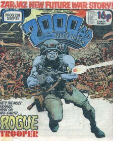
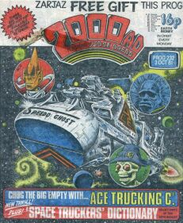
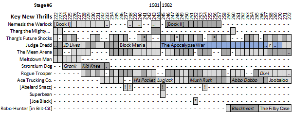
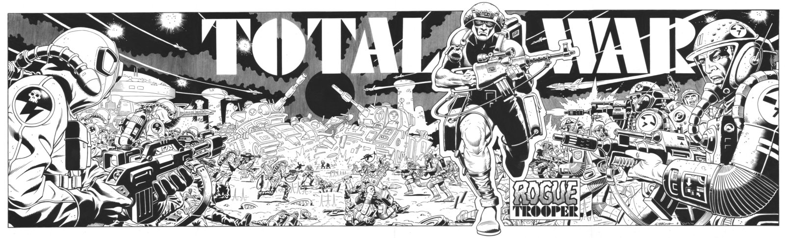

|
 |  |
| Prog 222 by Kevin O'Neill | Prog 228 by Dave Gibbons | Prog 232 by Massimo Belardinelli |
Marking out a new era, the giant-length one-off thrills such as Meltdown Man and Return to Armageddon are coming to an end. In their place, with a staggered start, come three new thrills set to serve the comic for years to come: Nemesis the Warlock, Ace Trucking Co. and Rogue Trooper. From a historical perspective, each of these thrills, to some extent, loses steam over time but here they launch powerfully and the comic feels confident and fresh.
Scheduling is problematic, with stutters in the art supply needing plugged by fillers (e.g. the first book of Nemesis gets delayed twice). Rogue Trooper (positioning itself quickly as a resident thrill alongside Judge Dredd) skirts the problem with shorter tales and multiple artists.
Providing a consistent throughline in what's quite a chaotic schedule is Judge Dredd, dominating the latter two thirds of this stage with the unmissable, legendary double whammy of Block Mania & The Apocalypse War.
Nemesis the Warlock *NEW THRILL*
Almost defying description, Nemesis is up there as perhaps the most inventive story in 2000 AD. The title character is captured by simple human villagers who decide that they should hang him. Usually, this would be a tale about the foolish superstitions of poorly educated bumpkins, but here they're actually correct: Nemesis is a demonic being (an alien Warlock) and proceeds to execute those that wronged him in inventively horrific ways. This is the hero of the piece. The villain, Torquemada, is a human supremacist who commits multiple genocides on an interstellar scope. Kevin O'Neill's art is so intricate that scheduling becomes an issue. Book II has art by Jesus Redondo and features a plot involving a deadly, human-sized, intelligent spider-race.
Doesn't return until prog 335.
Tharg the Mighty
Alien editor deals with various assaults on thrill power.
More in the next stage....
Tharg's Future Shocks
Usually one-off tales with a twist.
More in the next stage...
Judge Dredd
Judge Death Lives (224-228) wisely revives Anderson and Death but then goes a massively creative step further by introducing another three Dark Judges: Fear, Fire & Mortis. Each has their own preferred method of extinguishing life and the creative team clearly knew they were onto something special when they treated us to a full colour poster centre-spread of the four dark judges in prog 226.
Diary of a Mad Citizen (229-230) tells the compelling story of what makes a citizen turn futsie. Assault on I-Block 4 (231-232) introduces the Gila Munja, a Cursed Earth threat so compelling that they also feature in The Hotdog Run (233-235) which establishes new lore on the training of Judge Cadets.
This sequence of short, powerful stories features an amazing art roster of Brian Bolland, Colin Wilson, John Cooper and Ron Smith. Just on their own, they form a ridiculously strong run for Dredd and we might expect a slightly weaker follow-up. Instead we run straight into Block Mania, itself just a precursor to The Apocalypse War. Together, these run for 34 progs and utterly change the world of Dredd and Mega-City One.
The birth of so many important aspects of Dredd lore echo out from this era: the four Dark Judges, the Gila Munja, Hotdog Runs, Sovs intent on revenge, much of the city nuked out and the character of Orlok.
The Mean Arena
Steve Dillon's superlative work on The Jensens (218-223) invites negative comparisons when other artists (perhaps less suited to the milieu) take over art duties. Despite the fun, interactive idea of readers coming up with team designs, the story starts to lose traction. The shark is jumped with the introduction of Chip (a precocious super-powered android bodyguard), who seems to fit the mould of Scrappy Doo as being both too childlike and too obnoxious.
Mother Vlad's Vampires takes us on into the next stage...
Meltdown Man
Finally concluding, Nick Stone seems to solve the problem by altering the past such that the future never occurs (which, bleakly, means that all his friends will never exist).
In the coda, he materializes on the side of the New Jersey Turnpike (as do metaphysical head-space renters in Being John Malkovich from 1999).
Strontium Dog
Something of an odd tonal shift after Portrait of a Mutant, we get a couple of much lighter, frothier tales with The Gronk Affair and The Kid Knee Caper.
We have to wait 101 progs before this returns.
Rogue Trooper *NEW THRILL*
A blue-skinned Genetic Infantryman (bred for war) stalks the poisonous battlefields of Nu Earth seeking revenge for the massacre of his comrades by a traitor general. In order to provide some dialogue for the loner, Rogue is accompanied by the bio-chips (i.e. encoded personalities) of three dead comrades, slotted into his equipment: the appropriately (and oddly presciently) named Helm, Bagman and Gunnar.
Following a series of short adventures, some of which advance the central plot, the longer All Hell on the Dix-I Front takes us through to the next stage...
Ace Trucking Co. *NEW THRILL*
Mush rush meets B-Hive-K on line for blubbos and flanners. Clearway lugbuddies burn jekyl from disgumby to plasma jam blipping big byms. Ace Garp jocks Speedo Ghost alongside biffo GBH, powerhouse lugbuddy Feek the Freek and a blubberoni scarf.
[Translated for wah wah diggers:] Convoy meets Mos Eisley cantina by way of Only Fools and Horses. An alien space trucking crew lurch from difficulty to disaster seeking their fortune. Ace Garp captains the Speedo Ghost alongside his minder GBH, his engineer Feek the Freek and his pointlessly (plot-wise) animate scarf.
Launched lovingly with its own Space Truckers' Dictionary (232-235) this succeeded well as a long-form, light-hearted series of misadventures. This initial foray includes Hell's Pocket, Lugjack, The Great Mush Rush, Last Lug to Abbo Dabbo ("I'll sing you a song and it won't take long, or maybe I won't and it will") and the slightly weak Joobaloo. It continues in the next stage.
[Abelard Snazz]
Alan Moore's Snazz continues to miscalculate the application of his vast intellect.
Returns for a final hurrah in prog 299.
Superbean
Not quite fitting under the umbrella of a Future Shock (or a Robo-Tale), this one-off instead stood proudly alone...
...very briefly, and then was seen no more.
[Joe Black]
A Han Solo-ish rogue isn't as clever as he thinks in these rags-to-rags stories of galactic misadventure.
Dipping in and out of Future Shocks (asterisked in the diagram), this stage sees the four final Joe Black adventures with art by John Higgins.
Robo-Hunter [in Brit-Cit]
After an 84-prog hiatus, Sam Slade, Hoagy and Stogie emigrate to Brit-Cit and start a sequence of shorter investigations (starting with The Beast of Blackheart Manor and The Filby Case.)
Continues in the next stage...
A highlight here is the four-piece collectible Total War poster, showing us that the battle between the Norts and the Southers is a vital aspect of the Rogue Trooper story. This is an uncolored version:
